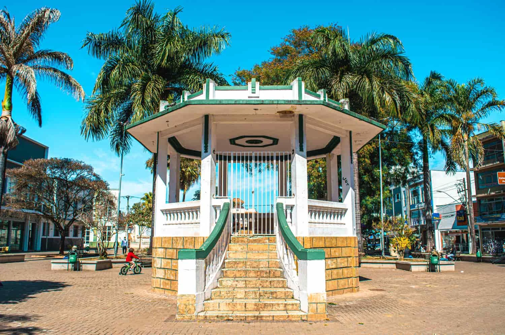

Três Corações
Ter viajado para esse lugar foi uma das minhas melhores escolhas. Fui visitar uma amiga de infância e não me arrependi. Voltei lá em mais duas oportunidades. Foi incrível; gostaria de ir novamente o quanto antes, para ter um tempo de paz e calmaria, misturado com felicidade e liberdade.